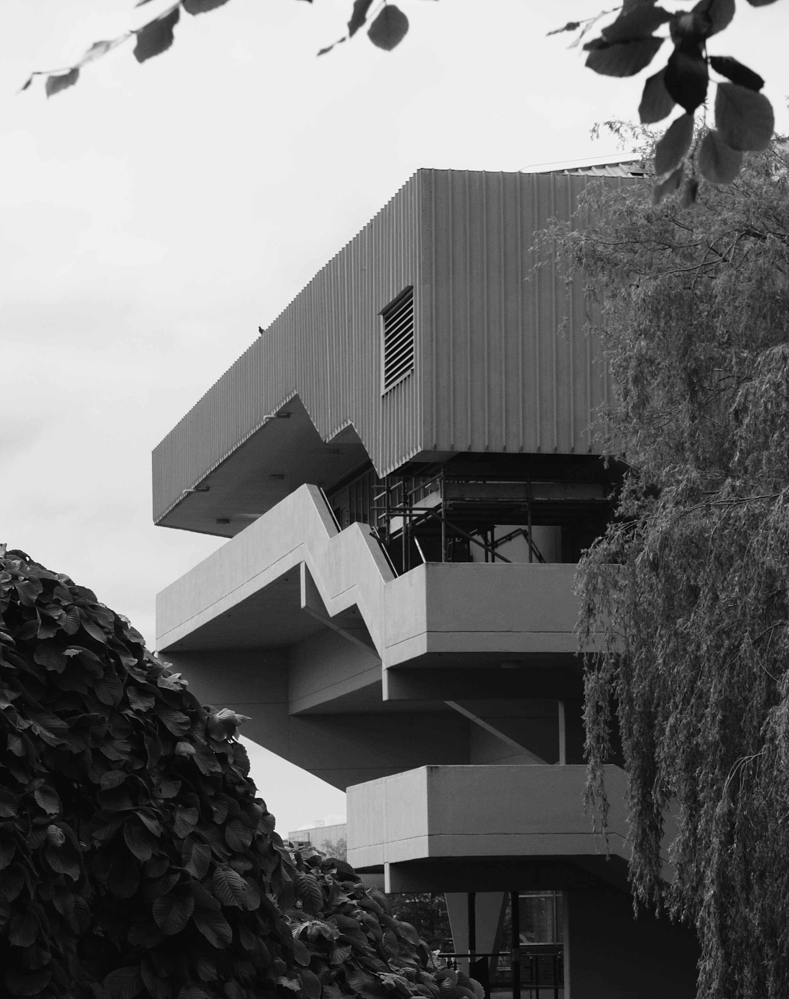

Composition: Vertical Lines
16 June 2017
I came across a video about composition created by Ted Forbes. It was specifically looking at the use of lines in images. In the video Ted explained that lines can evoke an array of feelings in an image, from strength, to tension and even to as sense of calm. Vertical lines give a sense of authority and structure, an example used in the video was tall buildings, they symbolise power and appear as though they are looking down on us. Horizontal lines like those found in seascapes can give a sense of stillness and calm.
The video then sets a photo assignment to capture images that illustrate the different types of lines that can be found in an image, that is, vertical, diagonal, horizontal, organic and implied. Therefore, today while walking around campus I focused on vertical lines. Before I set out, I had an idea of what I was going to achieve. The images would be black and white to help define the lines in the image. Secondly, the images would probably be of structures, such as buildings, since that is where I was most likely to find clear examples of vertical lines. The picture above is a clear example of what I was looking for. The vertical lines give the image a sense of stability and structure. This is a very literal example therefore, in the future I’d like to be able to capture scenes in which vertical lines appear more subtly but still give that feeling of strength.
Editing these images helped me practice converting images to black and white with gimp. This program combined with a very helpful tutorial gave me a lot of flexibility over how different colours are treated. It was surprising to learn how much control I had over the image. I also learned how to emulate different black and white film looks, which was quite interesting.
Ted also noted that organic lines can provide many different types of moods. For example, lightning in a scene produces jagged lines that add tension to an image whereas the curved lines that define flower give a sense of delicacy. These examples show that the organic line has more than one mood associated with it.
The second image contains a mixture of vertical, horizontal and diagonal lines formed by the buildings structure. A better to frame this image may have been to make the bush less prominent in the foreground. However, I feel that the plants emphasise the straight lines of the building. Ted talked about how diagonal lines can bring a sense of movement and make an image seem dynamic. I think this second image provides a small illustration of this.